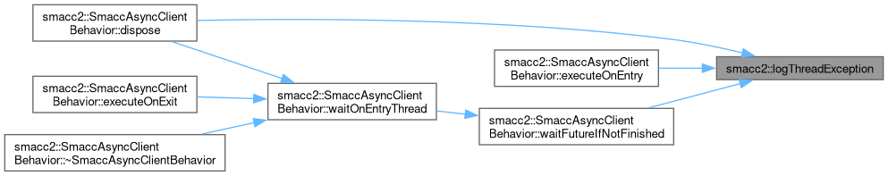
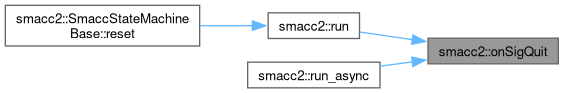
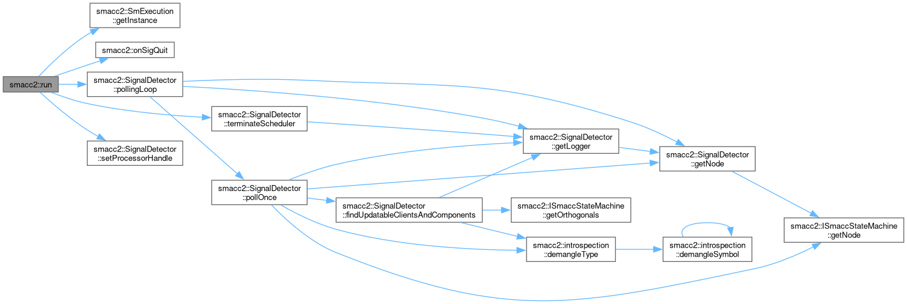
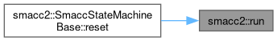
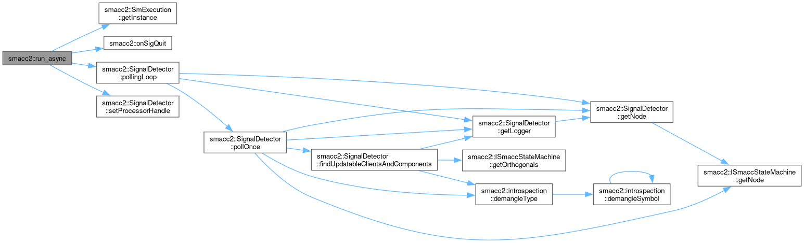
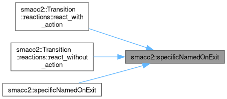
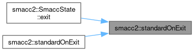

Namespaces | |
| namespace | client_bases |
| namespace | client_behavior_bases |
| namespace | client_behaviors |
| namespace | client_core_components |
| namespace | default_events |
| namespace | default_transition_tags |
| namespace | event_generators |
| namespace | introspection |
| namespace | state_reactors |
| namespace | utils |
Classes | |
| struct | AddTEventTypeStateReactor |
| struct | AddTEventTypeStateReactorInfo |
| class | CallbackCounterSemaphore |
| class | CbServiceServerCallbackBase |
| class | ClientHandler |
| struct | ComponentKey |
| struct | EvCbFailure |
| struct | EvCbFinished |
| struct | EvCbSuccess |
| class | HasSpecificNamedOnExit |
| class | HasStandardOnExit |
| class | ISmaccClient |
| class | ISmaccClientBehavior |
| class | ISmaccComponent |
| class | ISmaccOrthogonal |
| class | ISmaccState |
| class | ISmaccStateMachine |
| class | ISmaccUpdatable |
| class | Orthogonal |
| class | SignalDetector |
| class | SmaccAsyncClientBehavior |
| class | SmaccClientBehavior |
| class | SmaccEventGenerator |
| class | SmaccSignal |
| class | SmaccState |
| struct | SmaccStateMachineBase |
| State Machine. More... | |
| class | SmExecution |
| class | StateReactor |
| class | Transition |
Typedefs | |
| template<class T > | |
| using | deep_history = sc::deep_history<T> |
| typedef boost::signals2::connection | SmaccSignalConnection |
Enumerations | |
| enum class | SMRunMode { DEBUG , RELEASE } |
| enum class | ComponentRequirement { SOFT , HARD } |
| enum class | ExecutionModel { SINGLE_THREAD_SPINNER , MULTI_THREAD_SPINNER } |
| enum class | EventLifeTime { ABSOLUTE , CURRENT_STATE } |
| enum class | StateMachineInternalAction { STATE_CONFIGURING , STATE_ENTERING , STATE_RUNNING , STATE_EXITING , TRANSITIONING , STATE_MACHINE_INITIALIZING } |
Functions | |
| template<typename TState , typename TTransitionTagName > | |
| void | specificNamedOnExit (TState &st, TTransitionTagName tn, std::true_type) |
| template<typename TState , typename TTransitionTagName > | |
| void | specificNamedOnExit (TState &, TTransitionTagName, std::false_type) |
| template<typename TState , typename TTransitionTagName > | |
| void | specificNamedOnExit (TState &m, TTransitionTagName tn) |
| template<typename TState > | |
| void | standardOnExit (TState &st, std::true_type) |
| template<typename TState > | |
| void | standardOnExit (TState &, std::false_type) |
| template<typename TState > | |
| void | standardOnExit (TState &m) |
| void | onSigQuit (int sig) |
| template<typename StateMachineType > | |
| void | run (ExecutionModel executionModel=ExecutionModel::SINGLE_THREAD_SPINNER) |
| template<typename StateMachineType > | |
| SmExecution & | run_async () |
| static bool | sleepUnlessShutdown (rclcpp::Rate &rate) |
| static void | logThreadException (const rclcpp::Logger &logger, const std::string &name, const char *thread, const char *what) |
Typedef Documentation
◆ deep_history
| using smacc2::deep_history = sc::deep_history<T> |
Definition at line 53 of file common.hpp.
◆ SmaccSignalConnection
| typedef boost::signals2::connection smacc2::SmaccSignalConnection |
Definition at line 33 of file smacc_signal.hpp.
Enumeration Type Documentation
◆ ComponentRequirement
|
strong |
◆ EventLifeTime
|
strong |
| Enumerator | |
|---|---|
| ABSOLUTE | |
| CURRENT_STATE | |
Definition at line 48 of file smacc_state_machine.hpp.
◆ ExecutionModel
|
strong |
| Enumerator | |
|---|---|
| SINGLE_THREAD_SPINNER | |
| MULTI_THREAD_SPINNER | |
Definition at line 30 of file smacc_signal_detector.hpp.
◆ SMRunMode
|
strong |
| Enumerator | |
|---|---|
| DEBUG | |
| RELEASE | |
Definition at line 67 of file common.hpp.
◆ StateMachineInternalAction
|
strong |
| Enumerator | |
|---|---|
| STATE_CONFIGURING | |
| STATE_ENTERING | |
| STATE_RUNNING | |
| STATE_EXITING | |
| TRANSITIONING | |
| STATE_MACHINE_INITIALIZING | |
Definition at line 54 of file smacc_state_machine.hpp.
Function Documentation
◆ logThreadException()
|
static |
Definition at line 43 of file smacc_client_async_behavior.cpp.
Referenced by smacc2::SmaccAsyncClientBehavior::dispose(), and smacc2::SmaccAsyncClientBehavior::waitFutureIfNotFinished().

◆ onSigQuit()
| void smacc2::onSigQuit | ( | int | sig | ) |
Definition at line 527 of file signal_detector.cpp.
Referenced by run(), and run_async().

◆ run()
| void smacc2::run | ( | ExecutionModel | executionModel = ExecutionModel::SINGLE_THREAD_SPINNER | ) |
Definition at line 162 of file smacc_signal_detector.hpp.
References smacc2::SmExecution::getInstance(), smacc2::SignalDetector::joinAsyncClientBehaviorThreads(), onSigQuit(), smacc2::SignalDetector::pollingLoop(), smacc2::SmExecution::scheduler1, smacc2::SmExecution::schedulerThread, smacc2::SignalDetector::setProcessorHandle(), smacc2::SmExecution::signalDetector, smacc2::SmExecution::sm, and smacc2::SignalDetector::terminateScheduler().
Referenced by smacc2::SmaccStateMachineBase< DerivedStateMachine, InitialStateType >::reset().


◆ run_async()
| SmExecution & smacc2::run_async | ( | ) |
Definition at line 230 of file smacc_signal_detector.hpp.
References smacc2::SmExecution::getInstance(), onSigQuit(), smacc2::SignalDetector::pollingLoop(), smacc2::SmExecution::scheduler1, smacc2::SmExecution::schedulerThread, smacc2::SignalDetector::setProcessorHandle(), smacc2::SmExecution::signalDetector, smacc2::SmExecution::signalDetectorLoop, and smacc2::SmExecution::sm.

◆ sleepUnlessShutdown()
|
static |
Definition at line 367 of file signal_detector.cpp.
Referenced by smacc2::SignalDetector::pollingLoop().
◆ specificNamedOnExit() [1/3]
| void smacc2::specificNamedOnExit | ( | TState & | , |
| TTransitionTagName | , | ||
| std::false_type | ) |
Definition at line 50 of file state_traits.hpp.
◆ specificNamedOnExit() [2/3]
| void smacc2::specificNamedOnExit | ( | TState & | m, |
| TTransitionTagName | tn ) |
Definition at line 55 of file state_traits.hpp.
References specificNamedOnExit().
◆ specificNamedOnExit() [3/3]
| void smacc2::specificNamedOnExit | ( | TState & | st, |
| TTransitionTagName | tn, | ||
| std::true_type | ) |
Definition at line 44 of file state_traits.hpp.
Referenced by smacc2::Transition< Event, Destination, Tag, TransitionContext, pTransitionAction >::reactions< State >::react_with_action(), smacc2::Transition< Event, Destination, Tag, TransitionContext, pTransitionAction >::reactions< State >::react_without_action(), and specificNamedOnExit().

◆ standardOnExit() [1/3]
| void smacc2::standardOnExit | ( | TState & | , |
| std::false_type | ) |
Definition at line 89 of file state_traits.hpp.
◆ standardOnExit() [2/3]
| void smacc2::standardOnExit | ( | TState & | m | ) |
Definition at line 94 of file state_traits.hpp.
References standardOnExit().
◆ standardOnExit() [3/3]
| void smacc2::standardOnExit | ( | TState & | st, |
| std::true_type | ) |
Definition at line 83 of file state_traits.hpp.
Referenced by smacc2::SmaccState< MostDerived, Context, InnerInitial, historyMode >::exit(), and standardOnExit().

Generated by